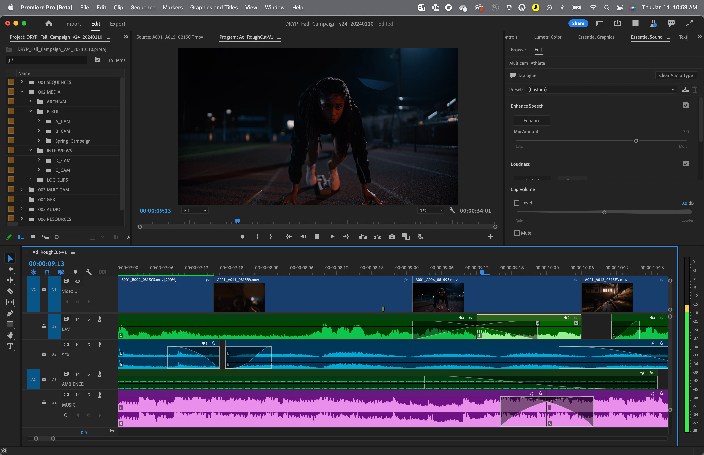

L'arte di unire le inquadrature
Il montaggio è la coordinazione di un'inquadratura con la successiva. Anche se oggi è tutto digitale, storicamente significava tagliare letteralmente la pellicola con le forbici e incollare i pezzi.
Il passaggio più comune è lo Stacco (Cut), un passaggio istantaneo da un'immagine all'altra. Esistono però transizioni graduali come la Dissolvenza incrociata (un'immagine sfuma mentre l'altra appare, spesso per indicare che è passato del tempo) o la Dissolvenza a nero (fade out), che funziona come il sipario che cala a teatro per chiudere un capitolo.
